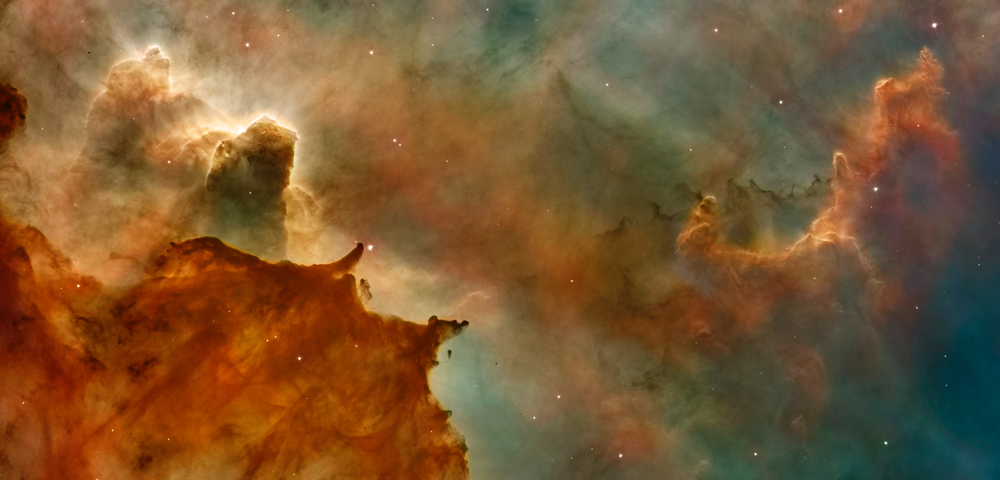

Terraforming or terraformation(literally, "Earth-shaping") of a planet, moon, or other body is the hypothetical process of deliberately modifying its atmosphere, temperature, surface topography or ecology to be similar to the environment of Earth to make it habitable by Earth-like life.
The concept of terraforming developed from both science fiction and actual science. The term was coined by Jack Williamson in a science-fiction short story ("Collision Orbit") published during 1942 in Astounding Science Fiction,but the concept may pre-date this work.